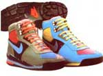

Boots Built To Travel
Hiking footwear technology and choosing the right shoe for the trek.
By Jan Adkins
May/June 1990
Taking a hike with technology
by Jan Adkins
Hi-Tec's Sherpa (left) and Euro Adventure are both for strenuous backpacking
When man first rose upright and started walking on only hay of his available limbs, he discovered his thumbs were pretty useful. But by virtue of this new stand-up existence, we all fell heir to back pains, shinsplints, constipation, hemorrhoids and aching feet. Oddly enough, our opposable thumbs give us very little trouble, despite how cleverly, and often, we put them to work grasping things.
As elegant as hands became, however, their duties are light compared to those of the feet. Take a sturdy creature of, say, 165 pounds, carrying a load of as much as 45 pounds. Now equip this being with two all-terrain contact pads feet. These will balance in four directions, absorb shock, lift, anchor and flex to establish stability on mud, sand, rock faces, tree limbs and ice. Each foot must support half the weight above it at rest, the entire weight while on the move and more than twice the weight on impact. Furthermore, each foot must cheerfully bear as many as 40,000 flexures over a day of walking upright. All this while the famous opposable thumb twiddles idly. Having studied anatomical engineering, the manufacturers of prosthetic feet have a lot of respect for the original design.
When we rose upright our thumbs were freed to make us hotshot manipulators, partly because our feet bore the load. So it falls short of gratitude that our feet have seen little improvement in footgear until this century.
ROMAN legions marched around the Mediterranean in sandals. As they marched farther into northern Gaul, the sandals became close-toed and wrapped with more cloth or leather to fend off the cold.
Medieval footwear consisted of the same sandal sole stitched to cloth or soft leather: the boot. Some historians identify the raised heel as an adjunct of the stirrup, and some contend that our medieval ancestors were not only short but sought an increase in height and stature. After this fashion statement, and beyond the introduction of lacing and buttoning, nothing much newsworthy occurred in the shoe business for several hundred years.
During the American Civil War, troops confronted a radically different shoe, the crook. A crook was a boot made on a right- or left-foot last (the hardwood form on which shoes are sewn). Before that time, boots were straights; they had no right and left and were interchangeable.
The conservative infantry regarded these boots with suspicion, thinking they were too confining. Remember that most of them had been raised barefoot. This is what drill sergeants tell their recruits to this very day.
We think of "breaking in" a pair of boots and are reminded, not illogically of the tortures associated with the Spanish Inquisition. We think of mountain climbers and paratroopers. We do not think of comfort.
The wear we give our feet is lighter than the active life our distant ancestors gave theirs, with this one exception:The pounding our dogs take on modem sidewalks and stone floors is brutal.
Sometime during World War I a refined shoe form emerged, which we refer to as the Munson last. It responded to early scientific studies of how feet worked inside shoes and provided a roomier box toe for the expansion of the ball of the foot as it flexed, and for the general expansion of the feet as blood and fluids pumped through them while they worked. These doughboy combat boots (topped with Puttees: now rare leggings laced from ankle to knee) could have been the first specifically designed general-purpose"outdoor shoes."
Let's take a load off here and rest our dogs a moment as we consider the outdoor shoe. We conjure up dark leather and bulletproof soles and three rods of laces, with maybe a knife sheath. We think of "breaking in" a pair of boots and are reminded, not illogically, of the tortures associated with the Spanish Inquisition. We think of loggers, mountain climbers and paratroopers. We do not think of comfort. Nor do we think of the original American woodsmen, guys who really knew how to get around, and what they wore: eight-ounce moccasins. Once again the Anglo-Saxon engineering approach to a problem won out, opting for substance over principle, strength over subtlety.
One of the benchmarks of the heavy trail boot was the Chippewa Forest Service boot, similar to the present-day Chippewa Logger. About 10 inches high, it was made of durable leather on a modified Munson last with a box toe, a steel shank that bridged the arch between ball and heel, and a bellows tongue. It had about 10 eyelets and a Vibram lug sole. The Logger was nominally water-resistant (although every stitch was a potential wick for moisture) and was designed to protect feet from shifting branches and rock bruises, as well as to support them on irregular surfaces. Once the outcome became clear as to what would break in first, the boots or one's feet, they turned out to be pretty good boots, even weighing in at a whopping five pounds apiece.
What changed the idea of heavy boots for rough trails, wet weather and weighty loads?
Even objects as ordinary as shoes have legends, and this one rests on photos. The story goes that sponsors of climbing expeditions into the Himalaya went over rolls of film shot during an approach trek and noticed that the climbers were not wearing their trademark heavy expedition boots, but running shoes, worn to a frazzle and repaired with wraps of silver gaffer's tape. It became clear that running shoe technology-on which Nike, Adidas, New Balance and others had spent millions of dollars-could be applied to the needs of walkers, hikers and climbers.
The Nike Approach boot was among the front-runners. It incorporated the major advances of running shoe construction: shock-absorbent midsole, a combination of leather, synthetic cloth and plastics, a stabilizing foot bed that supports the entire foot, and integral speed laces. Nike added a Gore-Tex bootie to waterproof the boot, which was built on a narrow last of their own design. This year the company offers the third-generation Approach, sewn on a last that came out of their own extensive research: the Baltoro High (leather/mesh, just above the anklebone, steel shank, about $85); the Lava Flow, son of the popular Lava Dome (low-cut, leather/mesh, steel shank, about $75); and the Trango High, a lightweight hiking boot that can also be worn as a street shoe (high-cut, about $60).
A word about color. The trail is a good place for color. The black and white wing tips that were so popular in the '50s look positively somber next to this generation of earth pads. Nike, Hi-Tec, Tecnica U.S.A. and others produce boots that, even standing still, look like Gregory Hines is dancing in them.
The Danner Light was an early entry as a leather/Cordura-cloth hybrid with a thick layer of cushioning foam between soleboard and Vibram sole. Still available, it is a serious, comfortable boot (full-grain leather, Cordura cloth, steel shank, Vibram sole, about $150)
Hi-Tec's Prism is a woan's boot with high-carbon ruber outsoles. This medium-duty Danner Santiam is light and dries quickly. The hiking market has changed over the last few years. More people are walking, but they are day hiking, not packing in for a week. These weekend warriors are willing to pay for support and comfort in a boot. Fewer walkers are prepared to invest in the pain of breaking in a pair of cowhide brutes. The trail-shoe field has bloomed with the number of walkers and your feet can find fast and faithful friends for a modest sum if you look for a few basic virtues.
The most important factor in your boot is the fit. Take the socks you intend to wear on the trail and have the boot fitted by a professional. It's your fit and your trail and it will be your blister. If the boot you want isn't available in your width, don't get it. Fit is everything. The new generation of boots should fit without break-in; if it doesn't fit in the store it will never fit.
Your boot should be stable. It must maintain its structural integrity through bad terrain. It should have either a single, thick soleboard or a bonded or stitched double soleboard for torsional rigidity. If you are going to walk where cars can't go, it must have a steel shank (it's possible that fiberglass shanks work, as well); this shank is the backbone, the rock beater and the reason why running shoes and sneakers are tiring in rough country. The shank prevents your foot from straining to bend down over the sole.
Insist on sturdy heel and toe counters inside and out: These protect the most vulnerable parts of your foot from rock stubs, and they add roll stability.
Your boot should have a foot bed-an anatomically contoured insole that cradles your dogs scientifically and stabilizes them against the ground plane; in a well-fitted shoe the laces require less tension to keep the toes from jamming forward.
The midsole of a new boot should be of shock-absorbing material, usually foam, but not too squishy; once again, stability is on the line.
And now the point of contact. Maine loggers preferred caulks, chiselbladed nails that were hell on mahogany stairs. In the same way, good trail soles win not be popular in the kitchen, because the most durable material for soles is carbonfilled rubber. It holds up admirably to rocks and wear but leaves skid marks on the kitchen floor. Life's a bitch, isn't it? The tread pattern has become a cause with some environmentalists who would prefer that you use shallow treads that do not scar the trail surface and leave it vulnerable to erosion. It is fortunate that many new patterns seem to have a robust grip, to be trailfriendly and have nonloading (dirtrepelling) advantages.
Hi-Tec makes a serious line of footgear for mountain biking, running and even squash. Its mainstays, though, are hiking boots. The company introduced the Sierra Sneaker, a light canvas and rubber day hiker, in the late '70s. Its present line of more intricately engineered pieces are admirable: The Class V Suede (about $105) is a sturdy waterproof boot for wet trails; it is light, comfortable and surprisingly cool, utilizing a Dutch vapor-permeable waterproofing called Sympatex. The Hi-Tec Mt. Whitney (about $80) is a handsome and rugged suede and nylon boot, the top of the company's line. Its women's boots, the Sherpa ($77) and the Prism ($59), have the same colorful plumage of the men's line and were designed with equal expectation of hard use, but are sewn on women's lasts. All Hi-Tec's boots have steel shanks and stiff counters, good foot beds and high-carbon rubber soles.
Many hybrid boots are manufactured in Korea. Others, Rocky Boots, for example, are made in the United States.
Hybrid boots are not as stiff as leather boots and have almost no "form memory." The breaking-in process was once a communication between your feet and the leather, storing your foot forms in the shape of the boots. Without that memory the lacing of the boots becomes more critical. Speed laces encourage a general shift in tensions over a short time. (Now here is a quandary: Having had Copernicus, Newton, Albert Einstein, Isambard Kingdom Brunei, Wernher von Braun and Jim Henson, why don't we have a better closure system for shoes than bits of string?)
With the new generation of boots you may find it necessary to listen more carefully to your feet, to take time to loosen, re-tension and retie your laces often through a hike.
There are many fine boots being made by Merrell, Vasque, Tecnica, Wolverine, L.L. Bean and others. There are also many good European manufacturers. A caution, however, on the European last: It tends to be small through the toe and looser in the ankle, though many European boot makers are now using a special American last for export.
The key is comfort. There is no longer a reason for anyone to have hot, aching dogs on the trail. Technology has come to walk with us. Choose a good manufacturer and carefully fit yourself with a boot that suits your feet, those beleaguered supporters of the opposable thumb.
Jan Adkins, former art director at National Geographic, is a freelance writer and illustrator living in Washington, D.C
|
Hi-Tec's Prism Sport boot |
 This medium-duty Danner Santiam is light and dries quickly. |
Merrell's lightweight Mariah Sport shoe |
|
For trial cruising and backpacking, Merrell's Spirit is also a color trip |
Nike's Baltoro Sport shoe |
 |